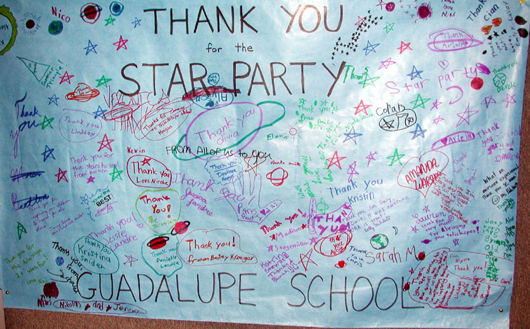
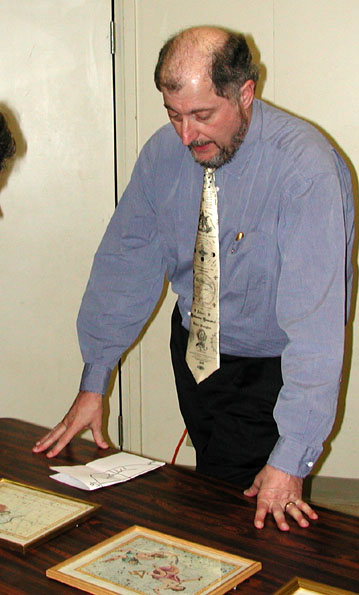

|
|

And thank you to the students of Guadalupe School for their unique thank you note to Jim Van Nuland and the SJAA members who helped at school star parties last fall. Photo by Morris Jones.

Dr. Nick Kanas shows some examples of early star charts at the January SJAA general meeting during his talk Of epicycles and unicorns: Celestial mapping in the golden age. Photo by Morris Jones.
|